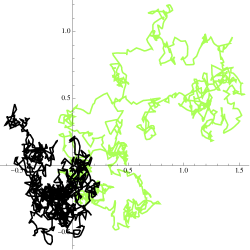
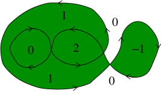

federico.camia@nyu.edu, albertogandolfi@nyu.edu, kleban@nyu.edu \affiliation[★]New York University Abu Dhabi, United Arab Emirates \affiliation[♠]VU University, Amsterdam, the Netherlands \affiliation[♣]University of Florence, Italy \affiliation[♡]Center for Cosmology and Particle Physics, Department of Physics, New York University, United States of America
دوال الترابط المطابقة في حساء الحلقات البراونية
الملخص
نعرّف وندرس مجموعة من المؤثرات التي تحسب خواص إحصائية لحساء الحلقات البراونية، وهو غاز ثابت مطابقيًا من حلقات براونية عشوائية (مسارات براونية مقيّدة بأن تبدأ وتنتهي عند النقطة نفسها) في بعدين. نبرهن أن دوال الترابط لهذه المؤثرات تمتلك كثيرًا من خواص المؤثرات الأولية المطابقة في نظرية حقل مطابقة، ونحسب بعدها المطابق. هذه الأبعاد حقيقية وموجبة، إلا أنها تتميز بخاصية جديدة، هي أنها تتغير باستمرار بوصفها دالة دورية في وسيط حقيقي. ونعلّق على علاقة حساء الحلقات البراونية بالحقل الحر، ونستخدم هذه العلاقة لإثبات أن الشحنة المركزية لحساء الحلقات تساوي ضعف شدته.
1 مقدمة
1.1 حساء الحلقات البراونية
لنتخيل أخذ حفنة من الحلقات ذات أحجام مختلفة ونثرها على سطح مستو. يكون موضع سقوط كل حلقة عشوائيًا بانتظام، ومستقلًا عن أي حلقات موضوعة من قبل. كل حلقة براونية، أي حركة براونية مقيّدة بأن تبدأ وتنتهي عند نقطة «جذر» واحدة، لكنها غير مقيدة فيما عدا ذلك، وتوصف بطول «زمني» يرتبط خطيًا بمساحتها المتوسطة (انظر الشكل 1). والتوزيع في هو ، بحيث توجد حلقات صغيرة أكثر بكثير من الحلقات الكبيرة، وقد اختير لضمان الثبات تحت تحويلات القياس. وتوصف الكثافة الكلية للحلقات بوسيط واحد هو «الشدة» . تسمى هذه المجموعة العشوائية من الحلقات حساء الحلقات البراونية (BLS) وقد أُدخلت في [1].

وبصورة أدق، فإن BLS هو تجميعة عشوائية بواسونية من الحلقات في مجال مستو ذات مقياس شدة ، حيث إن ثابت و هو تقييد على لـ مقياس الحلقة البراونية
| (1) |
حيث يرمز إلى المساحة و هو مقياس الجسر البراوني العقدي ذي نقطة البداية والمدة . نلاحظ أن مقياس الحلقة البراونية ينبغي أن يفسر بوصفه مقياسًا على حلقات «غير مجذرة»، أي حلقات بلا نقطة «جذر» محددة. (صوريًا، الحلقات غير المجذرة هي أصناف تكافؤ من حلقات مجذرة، ويُحال القارئ المهتم إلى [1] للاطلاع على التفاصيل.) ولتيسير الترميز، ستُرمز -لمقياس مجموعة بالرمز ).
يتبين أن BLS ليس ثابتًا قياسيًا فحسب، بل هو ثابت مطابقيًا بالكامل. فعند شدات منخفضة بما يكفي ، تكوّن الحلقات المتقاطعة عناقيد تكون حدودها الخارجية موزعة مثل مجموعات الحلقات المطابقة (CLEs)[2]. وتُعد CLEs المجموعات الوحيدة من الحلقات المستوية غير المتقاطعة وغير ذاتية التقاطع التي تحقق خاصية تقييد مطابقة طبيعية، ويُتوقع أن تحققها حدود السلم المتصلة للواجهات في النماذج ثنائية الأبعاد من الفيزياء الإحصائية. حلقات CLEκ هي صيغ من SLEκ (تطور شرام-لوفنر بوسيط [3]). وتتوافق CLEs المتولدة من BLS مع قيم بين و. فمثلًا، يُتوقع أن تتقارب مجموعة الواجهات الخارجية القصوى في نموذج إيزنغ حرج مستو في مجال منته ذي شرط حدّي موجب إلى CLE3 في حد السلم.
سنعرّف في هذه الورقة ونحسب بعض دوال الترابط الإحصائية التي تميز جوانب من توزيع BLS. وسنركز على نوعين من المعلومات: عدد الحلقات المميزة التي تحيط بنقطة معينة أو بمجموعة من النقاط (أو «تغطيها» إذا فُكر في الحلقات على أنها مملوءة)، والعدد الصافي للفات جميع الحلقات حول نقطة أو نقاط معينة (انظر الشكل 3). وفي الحالتين كلتيهما، نجد نتائج متسقة مع دوال ترابط مؤثرات أولية في نظرية حقل مطابقة.
1.2 الدوافع
لدينا عدة دوافع لهذا العمل. ففي [4] درس أحدنا نموذجًا مشابهًا تُنثر فيه أقراص بدلًا من الحلقات البراونية. إن دوال الترابط ذات 2 و3 نقطة لبعض المؤثرات في ذلك النموذج تتصرف مثل دوال ترابط نظرية حقل مطابقة (CFT)، وبمجموعة جديدة من الأبعاد المطابقة. وهذا مهم لأن نموذج [4] استُخلص في [5] بوصفه تقريبًا للتوزيع المقارب لتولد الفقاعات في نظريات التضخم الأبدي، وهي نظرية توجد أسباب للاعتقاد بأن مزدوجًا من نوع CFT قد يوجد لها [6, 7, 8]. إلا أن [4] حسب دالة النقاط الـ4 بدقة، وكانت تعاني من نقص: إذ لم تكن ملساء عندما يعبر موضع النقطة الرابعة الدائرة التي تصل النقاط الثلاث الأخرى.
ومنشأ اللاتحليلية في [4] هو على الأرجح أن توزيع الأقراص، مع أنه ثابت تحت التحويلات المطابقة العالمية، ليس ثابتًا مطابقيًا محليًا (لأن الأقراص لا تُرسَل إلى أقراص). وعلى النقيض من ذلك، فإن توزيع BLS ثابت مطابقيًا بالكامل. لذلك نتوقع أن تكون دوال الترابط المناظرة أحسن سلوكًا، وربما تعرّف CFT سليمة يمكن أن ترتبط بفيزياء زمكان دي سيتر والتضخم الأبدي.

ومن الدوافع الأخرى للنظر في نظريات حقل مطابقة مرتبطة بـ BLS العلاقة بين BLS وSLE [3]، والذي يرتبط بدوره بطائفة واسعة من النماذج الثابتة مطابقيًا تمتد من الترشيح [9, 10, 11, 12] إلى نموذج إيزنغ [13].
إذا كانت دوال ترابط BLS التي ندرسها تنشأ بالفعل من CFT أو تعرّفها، فلا يبدو أنها إحدى النظريات المعروفة حاليًا، ولها سمات عدة مهمة وجديدة. وكما في [4]، فإن الأبعاد المطابقة للمؤثرات الأولية حقيقية وموجبة، لكنها تتغير باستمرار وبوصفها دالة دورية في وسيط حقيقي . وكما سنرى، تنشأ هذه الدورية لأن المؤثرات من الصورة ، حيث إن يأخذ قيمًا صحيحة.
1.3 دوال الترابط في حساء الحلقات البراونية
كما ذُكر أعلاه، سندرس دوال الترابط (أي قيم التوقع) لنوعين متميزين من المؤثرات في BLS.
عدد الطبقات:
يرتبط النوع الأول ارتباطًا وثيقًا بالمؤثرات المدروسة في [4] (الذي سنشير إليه باسم «نموذج القرص»). ولكل حلقة، نعرّف الداخل بأنه مجموعة النقاط الواقعة داخل الحافة الخارجية القصوى للحلقة (بما في ذلك أي «جزر» معزولة قد تظهر في الداخل بسبب التقاطعات الذاتية؛ انظر الشكل 3). وتكون النقاط في هذه المجموعة «مغطاة» بالحلقة. ولأجل نقطة ، ننظر في مؤثر يعدّ عدد الحلقات المميزة التي تغطي النقطة ، بحيث يكون هو عدد «الطبقات» عند .
تنشأ صعوبة على الفور. فبما أن BLS ثابت مطابقيًا (ومن ثم قياسيًا)، فإن أي نقطة معينة من المستوى مغطاة بعدد لا نهائي من الحلقات باحتمال واحد. وبما أن ، فهذا يعني أنه، لأي ثابت، يتباعد باحتمال واحد. وتنشأ الصعوبة نفسها تمامًا في نموذج القرص، حيث عولجت بإضافة نسخة أخرى مطابقة ومستقلة من التوزيع، ثم عدّ الفرق بين عدد الأقراص من كل نوع التي تغطي .11 1 في نموذج القرص هذا يمكن التفكير في ذلك بوصفه عدًّا لعدد انتقالات الفقاعات التي أثرت في النقطة ، في نموذج يمتلك فيه الحقل تناظر إزاحة متقطعًا وتوجد قاعدة بسيطة لتصادمات الفقاعات (وهي تحديدًا القاعدة المناقشة في [14]). سنتبع هنا إجراءً مشابهًا جدًا، إذ نعين لكل حلقة قيمة بوليانية عشوائية ثم نعرّف مؤثر الطبقات .
عدد اللفات:
المؤثر الآخر الذي سنناقشه هو ، وهو يعدّ العدد الكلي للفات جميع الحلقات حول نقطة (الشكل 3). ويستفيد هذا من حقيقة أن للحلقات البراونية اتجاهًا (إذ تنمو في اتجاه محدد عندما يزداد الزمن ). وبما أن عدد اللفات يمكن أن يكون موجبًا أو سالبًا، فليس من الضروري إدخال نسخة أخرى من التوزيع أو حساب فرق بين قيمتين.
ويمكن إعطاء تفسير فيزيائي طبيعي للّف في BLS كما يأتي. إذا كانت كل حلقة تمثل هيئة وتر في لحظة زمنية ما في زمكان ذي أبعاد 2+1، فإن عدد اللفات يعدّ عدد وحدات الفيض الذي يكون الوتر مشحونًا تحته (انظر مثلًا [15]).
في الحالتين سنركز على أسّيات هذه المؤثرات مضروبة في معاملات تخيلية (إذ إن مترابطات مؤثرات العدد نفسها تعاني من تباعدات لوغاريتمية، مثل الحقول عديمة الكتلة في بعدين). وبسبب التشابه مع مؤثرات الرأس في الحقل الحر سنرمز إليها بـ
حيث يمكن أن يكون إما مؤثر عدد الطبقات أو مؤثر عدد اللفات.22 2 نظر Le Jan في حالة خاصة من نموذج اللفات على شبكة (انظر القسم 6 من [16]).
كُتبت ورقتنا لجمهور مختلط من الرياضيين والفيزيائيين. ففي معظم الورقة نقدم براهين صارمة لنتائجنا. والاستثناءات هي القسمان 5 و6، حيث نجري حسابات «على طريقة الفيزياء». أما الملحق، القسم 8، فمخصص للمتين مهمتين عن مقياس الحلقة البراونية (1) تُستخدمان عدة مرات في بقية الورقة. ويمكن للقارئ غير المهتم بطرائقنا أن يقرأ ببساطة القسم 2 للاطلاع على ملخص النتائج، والقسم 7 للاطلاع على خلاصاتنا.
2 الملخص والنتائج
تتعلق نتائجنا الرئيسية بدوال الترابط (أي قيم توقع الجداءات) لأسّيات مؤثري اللفات والطبقات في BLS. وعلى وجه التحديد، نثبت ما يأتي:
-
•
في كلتا النسختين في مجالات منتهية ، توجد مترابطات من المؤثرات الأسية
(2) ما دام يُفرض على الحلقات قطع قصير الزمن ، كما أن
موجود ومنته. علاوة على ذلك، إذا كان مجالًا منتهيًا آخر وكان تطبيقًا مطابقًا بحيث ، فإن
حيث يُعرَّف أدناه. وهذا هو السلوك المتوقع لمؤثر أولي مطابق.
-
•
في كلتا النسختين في الحجم اللانهائي، تنعدم مترابطات من المؤثرات الأسية
(3) . إلا أنه في حالة نموذج الطبقات يمكن إزالة القطع قصير الزمن مع الحصول على حد غير تافه بفرض شرط «حفظ الشحنة» الآتي، والمحقق بترديد ،
(4) - •
- •
- •
-
•
تختلف الأبعاد المطابقة بين نوعي المؤثرات. فبالنسبة إلى عدد الطبقات،
وبالنسبة إلى عدد اللفات،
حيث تكون هذه الصيغة صالحة لـ، ويكون دوريًا تحت .
أسئلة مفتوحة:
تترك نتائجنا عددًا من الأسئلة التي ينبغي الإجابة عنها.
- •
-
•
لم نثبت أن مترابطات النقاط الـ في أي من النموذجين دوال تحليلية في ، مع أننا نتوقع أن الأمر كذلك.
-
•
نتوقع أن هذه المترابطات تعرّف نوعًا من نظرية الحقل المطابقة.
-
•
فما نظرية الحقل المطابقة هذه؟ يمكن النظر إلى نموذج القرص في [4] بوصفه التوزيع المتأخر للفقاعات الناتجة عن انتقال طور من الرتبة الأولى في زمكان دي سيتر. فهل يوجد تفسير فيزيائي مماثل لـ BLS؟
3 مترابطات مؤثري الطبقات واللفات
3.1 مترابطات مؤثر الطبقات
كما نوقش في القسم 1.3، يُعرَّف النموذج بإسناد متغير بولياني عشوائي إلى كل حلقة في حساء الحلقات البراونية. وبديلًا من ذلك، يمكن التفكير في هذا بوصفه حساءين براونيين مستقلين للحلقات، لكل منهما توزيع بواسون ذي مقياس شدة ، حيث نأخذ . (وينتج هذا من حقيقة أن مجموعة كل الحلقات الآتية من BLS ذي شدة ومن نسخة مستقلة ذات شدة موزعة مثل BLS ذي شدة .)
لنرمز بـ إلى عدد الحلقات في الصنف الأول (على التوالي، الثاني) بحيث تكون النقطة مفصولة عن اللانهاية بصورة في . وإذا كانت هي الحلقة «المملوءة» ، فإن هذا الشرط يصبح ، أو إن مغطاة بـ. ونحن مهتمون بحقل الطبقات ، مع . وهذا تعريف صوري محض لأن كلي لا نهائي باحتمال واحد لأي . وهما لا نهائيان لسببين: بسبب وجود عدد لا نهائي من الحلقات الكبيرة المحيطة بـ (تباعد تحت أحمر، أو IR)، وبسبب وجود عدد لا نهائي من الحلقات الصغيرة حول (تباعد فوق بنفسجي، أو UV).
سننظر في مترابطات المؤثر الأسي ، ونبين أن هناك اختيارات لـ تزيل تباعد IR، وتطبيعًا يزيل تباعد UV. وبالتحديد، نحن مهتمون بالمترابطات وبعزومها
حيث ، و، وتؤخذ قيمة التوقع بالنسبة إلى التوزيع ، حيث إن هو توزيع بواسون بمقياس شدة و هو توزيع برنولي بوسيط (تذكر أن كل حلقة تنتمي إلى أحد صنفين باحتمالين متساويين)، أو على نحو مكافئ، بالنسبة إلى نسختين مستقلتين من حساء الحلقات البراونية ذواتي شدتين متساويتين .
وبما أن الحقل له تباعدا IR وUV معًا، نحصل على تعريف ذي معنى بإدخال قطوع تقيد الحلقات بأن يكون قطرها33 3 قطر الحلقة البراونية هو أكبر مسافة بين نقطتين على حدها الخارجي. ضمن بعض و، : لنضع وننظر في المترابطات
حيث يكون التوقع كما في أعلاه مع استبدال بـ .
3.2 دالة النقطة الـ في نموذج الطبقات
في هذا القسم نحسب صراحة دالة النقطة الـ في وجود قطعي IR وUV. وباستبدال مساحة حلقة براونية مملوءة ذات طول زمني بمساحة قرص نصف قطره ، تعيد النتيجة إنتاج دالة النقطة الـ في نموذج القرص [4].
لمّة 3.1.
لكل ، لدينا
البرهان. في هذه النتيجة والنتائج المشابهة الآتية، نحسب أولًا بدلالة احتمالات مثل (انظر (5)). ويمكن إجراء مثل هذه الحسابات باستخدام نسختين مستقلتين من BLS، مع توزيعات عشوائية للحلقات يشار إليها بـ و على التوالي؛ ثم بكتابة ، حيث إن هي دالة المؤشر لـ؛ وبعد ذلك نلاحظ أن خواص توزيع بواسون تعطي ؛ وأخيرًا نحسب التكامل في هذا التعبير الأخير. ونعطي الآن برهانًا مفصلًا قائمًا على التمثيل بالحلقات الملونة عشوائيًا.
تذكر أنه مع وجود قطعي IR وUV، يمكن تحقيق الحقل كما يأتي. لتكن تحقيقًا للحلقات، ولتكن مجموعة من متغيرات برنولي المتماثلة المستقلة التي تأخذ قيمًا في . الكمية
منتهية تقريبًا بالتأكيد، إذ إن (انظر [18]). والآن،
حيث . وإذا رمز إلى متغير عشوائي متماثل ذي قيم في ، فإن
3.3 مؤثر اللفات
لتعريف النموذج الثاني، ليرمز إلى عدد اللفات الكلي حول النقطة لكل الحلقات في حساء حلقات براونية؛ وكما في مؤثرات الطبقات، هذا تعريف صوري لأن قد تكون له تباعدات. لننظر مرة أخرى في المترابطات وعزومها حيث ، و، وتؤخذ قيمة التوقع بالنسبة إلى توزيع BLS. وبالرمز إلى توزيع بواسون ذي مقياس شدة ، وتقييد الحلقات بأن يكون قطرها بين بعض و، مع ، نضع وننظر في المترابطات
نحسب الآن صراحة دالة النقطة الـ في وجود قطعي IR وUV لنموذج اللفات.
لمّة 3.2.
لكل ، لدينا
| (7) |
حيث تكون الصيغة صالحة لـ، ومن أجل ينبغي في الطرف الأيمن استبدال بـ.
البرهان. لأجل نقطة وحلقة ، ليشر إلى عدد لفات حول . ثم من أجل لتكن
إذا كان للحلقة ، فإن عدد اللفات يساوي باحتمالين متساويين تحت . وأخيرًا، باستخدام اللمة 8.2 من القسم 8، من أجل لدينا
لكل لدينا
لأن مجموعات الحلقات ذات أعداد اللفات تلك متباينة لأجل القيم المختلفة لـ. ومن ثم، مع وجود قطعي IR وUV، وبالرمز إلى التوقع بالنسبة إلى توزيع بواسون ذي مقياس شدة ، لدينا، لكل ،
حيث ينبغي تفسير في الطرف الأيمن من المساواة الأخيرة بترديد .
وهذا يطابق النتيجة (17) المحسوبة باستخدام طرائق تكامل المسار الفيزيائية.
3.4 دالة النقاط الـ في نموذج الطبقات
نحلل الآن دالة النقاط الـ عندما يُزال قطع IR بواسطة شرط حفظ الشحنة (4).
مبرهنة 3.1.
إذا كان مع ، فثمة ثابت موجب بحيث إنه، لكل ،
ونتيجة لذلك،
البرهان. بوضع ، ولأجل و معطيين، و، لدينا
حيث إن هو عدد الحلقات التي تغطي كلًا من و، و () هو عدد الحلقات التي تغطي ولكن لا تغطي (وتغطي ولكن لا تغطي ، على التوالي). وتتجزأ دالة النقطتين لأن مجموعات الحلقات المساهمة في ، و متباينة؛ ويُستبدل بـ في العامل الأول في السطر الثاني لأن الحلقة التي تغطي كلًا من و لا بد أن يكون قطرها على الأقل .
وكما في حساب دالة النقطة الـ، يمكننا أن نكتب
حيث . وبالمثل، إذا كان وعرّفنا على النحو الموافق، فإن
و
وبجمع الحدود الثلاثة نحصل على
من السهل رؤية أن . (وينتج هذا من ثبات القياسي بالنظر إلى متتالية متزايدة، من حيث الحجم، من حلقات حلقية متحدة المركز ومتباينة حول و تكون نسخًا مقيّسة بعضها من بعض.) ومن ثم، لكي نزيل قطع IR، يجب أن نفرض (4) ونضع ، بحيث إن .
وبافتراض أن ، يتبقى لنا
| (8) |
ولإزالة القطع تحت الأحمر، نستخدم حقيقة أن الحلقة رقيقة: إذا كان ، لأي (انظر [17]، اللمة 4). وبالرتابة الواضحة لـ في ، فهذا يؤدي إلى
وبالثبات القياسي والدوراني والانتقالي لمقياس الحلقة البراونية ، لا يمكن لـ إلا أن يعتمد على النسبة ، ومن ثم يمكننا إدخال الترميز للدالة الخواص الآتية، وهي أيضًا نتائج مباشرة للثبات القياسي والدوراني والانتقالي لمقياس الحلقة البراونية.
-
•
لأي بحيث .
-
•
لأجل ، إذا كان ، وبوضع ،
(9)
4 التغاير المطابق لدوال النقاط الـ
نحلل الآن دوال النقاط الـ لأجل عام وخواص ثباتها المطابق. في المجالات المحدودة ، نبين، لكلا النموذجين، كيف نزيل قطع UV بالقسمة على ، مع قيم الملائمة. ونبين أيضًا أن هذا الإجراء يؤدي إلى دوال متغايرة مطابقيًا في المجال . وينشأ التحجيم مع من حقيقة أن الحلقات ذات القطر الأصغر من لا يمكنها إلا أن تلتف حول نقطة واحدة في الحد ، ومن ثم فإن دالة النقاط الـ لهذه الحلقات الصغيرة تختزل إلى جداء دوال النقطة الـ1.
في القسم 4.3، نتناول نموذج الطبقات في المستوى الكامل، ، ونبين أنه، إلى جانب قطع UV ، يمكننا أيضًا إزالة قطع IR ، شريطة أن نفرض الشرط (قارن (4)). ونشير إلى هذا الشرط باسم «حفظ الشحنة» لأنه، باستثناء الدورية، يذكر بحفظ الزخم أو الشحنة لمؤثرات الرأس للبوزون الحر.
وكما في دالة النقطتين، فإن تقارب IR في نموذج الطبقات (مع «حفظ الشحنة») يعود إلى نهائية الكتلة الكلية للحلقات التي تغطي بعض النقاط دون غيرها؛ وهذه هي أساسًا خاصية أن حساء الحدود الخارجية لحساء حلقات براونية رقيق بلغة Nacu وWerner [17]. ولم نبرهن النهائية المناظرة لنموذج اللفات، ولذلك لا نستطيع في تلك الحالة أن نبرهن إمكان إزالة قطع IR.
4.1 نموذج الطبقات في مجالات منتهية
في المبرهنة أدناه، ندع يرمز إلى توقع الجداء بالنسبة إلى حساء حلقات في بشدة لا يحوي إلا حلقات قطرها على الأقل ، أي بالنسبة إلى التوزيع ، حيث إن هو توزيع بواسون بمقياس شدة و هو توزيع برنولي بوسيط (تذكر أن كل حلقة تنتمي إلى أحد صنفين باحتمالين متساويين).
مبرهنة 4.1.
إذا كان ، وكان محدودًا و ، فإن
موجود ومنته وحقيقي. علاوة على ذلك، إذا كان مجموعة محدودة أخرى من وكان تطبيقًا مطابقًا بحيث ، فإن
سيستخدم برهان المبرهنة اللمة الآتية، حيث يرمز إلى القرص ذي نصف القطر والمركز ، ويرمز إلى متمم المركبة غير المحدودة الوحيدة لـ، وحيث يرمز إلى كمية «أصغر من »، أي إنها تؤول إلى الصفر عندما .
لمّة 4.2.
لتكن ، وليكن تطبيقًا مطابقًا. ولأجل ، افترض أن متميزة وأن ، ولتكن من أجل . عندئذ لدينا، لكل ،
البرهان. ليرمز إلى أكبر قرص (مفتوح) مركزه ومحتوى داخل ، وليرمز إلى أصغر قرص مركزه ويحتوي . وتبين لحظة تفكير أنه، عندما يكون صغيرًا بما يكفي،
| (11) | |||||
حيث ثابت موجب، وتتبع المساواة الأخيرة من القضية 3 في [18]. لاحظ أنه، عندما ، فإن الكميات أعلاه التي تتضمن محدودة بسبب حقيقة أن حساء الحلقات البراونية رقيق [17].
برهان المبرهنة 4.1. نبين أولًا أن الحد منته. وباستخدام ترميز القسم السابق، ندع ترمز إلى تحقيق للحلقات و إلى مجموعة من متغيرات برنولي المتماثلة المستقلة التي تأخذ قيمًا في . كذلك، لتكن ، وليرمز إلى فضاء إسنادات عدد صحيح غير سالب إلى كل مجموعة جزئية غير خالية من ، ومن أجل ، لتكن مجموعة المؤشرات بحيث إذا وفقط إذا . لدينا
حيث . وباحتمال واحد بالنسبة إلى ، لدينا لكل ،
مع الترميز ، وبالرمز إلى متغير عشوائي متماثل ذي قيمة ، لدينا
بعد ذلك، لأي مع ، لتكن و . وفضلًا عن ذلك، لتكن مجموعة المؤشرات بحيث إذا وفقط إذا . لتكن ولاحظ أنه، عندما ، يمكننا أن نكتب
| (12) | |||||
ولإثبات الجزء الثاني من المبرهنة، نستخدم (12) فنكتب
| (13) | |||||
ولكل مع ، يكون ثابتًا تحت التحويلات المطابقة، أي إذا كان تطبيقًا مطابقًا من إلى مجال محدود آخر ، وكان ، حيث ، فإن . ومن ثم فإن الحد الأسي الأول في (13) ثابت أيضًا تحت التحويلات المطابقة. وهذا يعني أنه، عندما يكون صغيرًا بما يكفي،
4.2 نموذج اللفات في مجالات منتهية
كما سبق، ليرمز إلى العدد الكلي للفات جميع حلقات حساء معطى حول . لدينا المبرهنة الآتية.
مبرهنة 4.3.
إذا كان ، وكان محدودًا و، فإن
موجود ومنته وحقيقي. علاوة على ذلك، إذا كان مجموعة محدودة أخرى من وكان تطبيقًا مطابقًا بحيث ، فإن
حيث ينبغي في الأس تفسير قيم بترديد .
البرهان. البرهان مماثل لبرهان المبرهنة 4.1. لتكن ، و. وباستخدام هذا الترميز يمكننا أن نكتب
ولكل مع ، يكون ثابتًا تحت التحويلات المطابقة؛ ومن ثم،
والمضي كما في برهان المبرهنة 4.1، لكن باستخدام اللمة 8.2 بدلًا من اللمة 8.1، يعطي
حيث إن من أجل و.
وهذا، مع الملاحظة التي استُخدمت سلفًا في نهاية القسم 3.3، وهي أن (حيث ينبغي تفسير في الطرف الأيمن بترديد )، يؤدي مباشرة إلى نص المبرهنة.
4.3 نموذج الطبقات في المستوى
تذكر أن يرمز إلى توقع الجداء بالنسبة إلى حساء حلقات في بشدة لا يحوي إلا حلقات ذات قطر .
مبرهنة 4.4.
إذا كان و مع ، فإن
موجود ومنته وحقيقي. علاوة على ذلك، إذا كان تطبيقًا مطابقًا بحيث ، فإن
مخطط البرهان. تجري بداية البرهان كما في برهان المبرهنة 4.1 حتى المعادلة (12)، مؤدية إلى المعادلة الآتية:
حيث ، لأجل مع ، و ، وحيث يرمز إلى مجموعة المؤشرات بحيث إذا وفقط إذا .
لاحظ، في المعادلة أعلاه، الشرط في الجداء الأول في الطرف الأيمن؛ وهذا الشرط يأتي من حقيقة أن الحد مع مضروب في ، حيث استخدمنا شرط «حفظ الشحنة» .
لكل ، وباستخدام اللمة 8.1، لدينا
والآن لاحظ أن الرتابة وحقيقة أن حساء الحلقات البراونية رقيق [17] تؤديان إلى أن
و،
لأجل مع ، موجودان ومحدودان.
وبعد أخذ ، يستمر البرهان كما في برهان المبرهنة 4.1، مع .
لقد رأينا بالفعل سلوك دالة النقاط الـ2 في نموذج الطبقات في القسم 3.4؛ وتتناول المبرهنة أدناه دالة النقاط الـ3.
مبرهنة 4.5.
لتكن ثلاث نقاط متميزة، فعندئذ لدينا
لبعض الثابت .
البرهان. تؤدي المبرهنة 4.4 إلى أن دالة النقاط الـ3 في المستوى الكامل تتحول بتغاير تحت التطبيقات المطابقة. وهذا يفضي مباشرة إلى المبرهنة باتباع الحجة المعيارية (انظر، مثلًا، [19]). ونرسم بإيجاز تلك الحجج أدناه تيسيرًا على القارئ.
إن الثبات القياسي، والثبات الدوراني، والثبات الانتقالي تؤدي مباشرة إلى وجود ثوابت بحيث
| (14) |
حيث ويؤخذ المجموع على كل الثلاثيات التي تحقق (والقيد على الأسس يتبع من المبرهنة 4.4 مطبقة على تحويلات القياس).
5 بعد مؤثر اللفات الأسي
في هذا القسم نحسب البعد المطابق لمؤثر عدد اللفات الأسي لأجل BLS في المستوى باستخدام طرائق تكامل مسار غير صارمة.
يعطى مقياس حلقة براونية واحدة ذات طول زمني ومجذرة عند بتكامل المسار لجسيم حر في بعدين إقليديين، مع تقييد المسار بأن يبدأ وينتهي عند :
| (15) |
حيث إن ، و إحداثيات عقدية، ومقياس تكامل المسار مطبّع تطبيعًا براونيًا بحيث .
لبناء حساء الحلقات البراونية في المستوى، ينبغي أن نكامل نقطة الجذر على المستوى بالمقياس المنتظم، ونكامل على بالمقياس ، ونجمع على قطاعات ذات حلقة موزونة بـ ومقسومة على لأن الحلقات غير قابلة للتمييز:
| (16) |
وترتبط هذه النتيجة ارتباطًا وثيقًا بـ(3.1) في [4].
نريد حساب دالة النقطة الـ1، ، حيث يمثل المتوسط على التوزيع المعرّف بـ(16). وبما أن عدد صحيح، ينبغي أن تكون النتيجة ثابتة تحت . كذلك، لكل تهيئة توجد تهيئة مرآتية فيها ، ولذلك يكون حقيقيًا وثابتًا تحت . ولأننا في المستوى ولا يمكن إشباع حفظ الشحنة، فإن دالة النقطة الـ1 ستتباعد كقوة من نسبة القطوع ، لكن هذه القوة تخبرنا ببعد المؤثر الذي نريد حسابه (انظر (7)).
لحساب يمكننا إدخال في تكامل المسار لكل حلقة في (16). وبسبب الثبات الانتقالي في المستوى يمكننا أن نضع . عندئذ يقابل هذا الإدخال إضافة حد إلى «لاغرانجيان» الجسيم المفرد في أس (15)، حيث إن هو الموضع الزاوي للمسار بالنسبة إلى الأصل . ومن ثم
وباستثناء التكامل على ، فإن الكمية في الأس ترتبط بدالة التقسيم القانونية عند درجة الحرارة العكسية لجسيم مشحون في حقل قطب مغناطيسي أحادي الشحنة عند الأصل (ودوال النقاط الـ التي تتضمن جداءات من الأسّيات تقابل أقطابًا مغناطيسية متعددة ذات شحنة عند المواضع ). ولحسابها، يمكن للمرء أن يكمّم الهاملتوني لجسيم في حقل القطب المغناطيسي، ثم يأخذ الأثر في أساس الطاقة [20]، أو يجري تكامل المسار في فضاء الموضع مباشرة ويحصل على نتيجة بدلالة مجموع على دوال بسل [21]. والنتيجة النهائية هي (انظر مثلًا [22]):
صالحة لـ ودورية في . ومن هذا نحصل على
| (17) |
باتفاق مع (7).
6 الشحنة المركزية والعلاقة بالبوزون الحر
لدالة التقسيم (16) تفسير بسيط في الحالة . فهي تطابق تمامًا دالة التقسيم لحقل بوزوني حقيقي حر عديم الكتلة في بعدين (إقليديين):
حيث إن هو مؤثر لابلاس. وإظهار نواة الحرارة باستخدام تكامل المسار (15) يتمم المطابقة مع (16).
يمكن اشتقاق علاقة مماثلة بسهولة بين دالة التقسيم للحقل الحر الغاوسي المتقطع (نظير الحقل الحر على الشبكة) ودالة تقسيم حساء حلقات السير العشوائي (النظير الشبكي لـ BLS)؛ أي ، حيث إن هي دالة تقسيم الحقل الحر الغاوسي المتقطع في بشرط حدّي صفري، و هي دالة تقسيم حساء حلقات السير العشوائي في بشدة ، و هو عدد الرؤوس في (انظر، على سبيل المثال [23]، ولا سيما القسمين 2.1 و2.2 والتمرين 2.5). وقد ترتبط هذه النتيجة بعمل Le Jan، الذي بيّن أنه عندما ، يمكن تعريف حقل الإشغال لـ BLS مع مجموع مربعات نسخ من حقل حر [16]. وهي توحي بأنه، لأجل عام، قد يمنح BLS معنى لفكرة قوة كسرية لحقل حر.
وبما أن البوزون عديم الكتلة هو CFT ذات شحنة مركزية ، فإن الشحنة المركزية لـ BLS تبدو في الحالة . وبالنظر إلى صورة (16)، يمكن التعبير عن دالة تقسيم BLS لأجل اعتباطية بدلالة تلك الخاصة بـ: . ويمكن برهنة العلاقة نفسها بصرامة في حالة حساء حلقات السير العشوائي المذكور سابقًا (انظر المعادلة (2.2) في القسم 2.1 من [23]). وهذا يؤدي إلى الاستنتاج أن العلاقة بين الشدة والشحنة المركزية لـ BLS تصح لكل .
ويتفق هذا مع الشحنة المركزية لـ SLE الموافق لمجموعة حدود عناقيد BLS. فبالفعل، تقود اعتبارات نظرية الحقل المطابقة إلى الصيغة
لكن من المعروف أيضًا [2] أنه عندما ، فإن مجموعة حدود عناقيد BLS ذي الشدة
هي CLEκ. (فمثلًا، يعطي BLS ذو مجموعة CLE3، بشحنة مركزية .)
نلاحظ أن معظم الأدبيات القائمة، بما فيها [2]، تحتوي على خطأ في المطابقة بين وشدة حساء الحلقات . ويمكن تتبع الخطأ إلى اختيار تطبيع مقياس الحلقة البراونية (اللانهائي) ، الذي يحدد الثابت أمام اللوغاريتم في اللمة 8.1 أدناه.44 4 نشكر Greg Lawler على نقاشات حول هذا الموضوع. ومع التطبيع المستخدم في هذه الورقة، والذي يطابق التطبيع في التعريف الأصلي لـ حساء الحلقات البراونية [1]، فإنه، لقيمة معطاة من ، تكون القيمة الموافقة لشدة حساء الحلقات هي نصف تلك المعطاة في [2].
7 الخلاصات
لا يزال الفهم جزئيًا فقط للصلة الغنية بين نظريات الحقل المطابقة التي يدرسها الفيزيائيون والنماذج التصادفية الثابتة مطابقيًا مثل BLS أو SLE. فالفيزيائيون يهتمون غالبًا بنظريات حقل مطابقة معرفة بلاغرانجيان، وتكون دوال ترابط المؤثرات الأولية، وطيف الأبعاد المطابقة، والشحنة المركزية هي موضوعات الدراسة والاهتمام الرئيسية. وعلى النقيض من ذلك، غالبًا ما تُعرَّف النماذج التصادفية المطابقة وتُدرس بطرائق مختلفة جدًا وبأهداف مختلفة.
حاولنا هنا اتخاذ بضع خطوات نحو تعزيز هذه الصلة. فباستخدام طرائق صارمة، عرّفنا مجموعة من الكميات في BLS وبرهنا أن قيم توقعها تتصرف مثل دوال ترابط المؤثرات الأولية. ومع أننا لم نثبت ذلك، فإننا نتوقع أن هذه دوال الترابط قد تعرّف نظرية حقل مطابقة. وإذا كان الأمر كذلك، فإن لها سمات جديدة عدة، مثل طيف دوري للأبعاد المطابقة.
تظل أسئلة أساسية كثيرة بحاجة إلى إجابة. هل يعرّف هذا النهج إلى BLS بالفعل CFT؟ وإذا كان كذلك، فهل وجدنا المجموعة الكاملة من المؤثرات الأولية؟ ما موتر الإجهاد-الطاقة؟ هل النظرية موجبة الانعكاس و/أو ثابتة نمطيًا؟ هل هي وحيدة بمعنى ما؟
وتتعلق مجموعة أكثر طموحًا من الأسئلة بالتضخم الأبدي، وإن كان ذلك في أبعاد 2+1. فقد اقتُرح نموذج [4] بوصفه نموذجًا لعبويًا للتطور المتأخر لزمكان متضخم أبديًا، لكن غياب التحليلية في دالة النقاط الـ4 لمؤثر الطبقات (أو نظيره) أفسده بوصفه CFT مفترضة. فهل يحل BLS هذه المشكلة، وإذا كان الأمر كذلك، فهل يمكن أن يساعد في تعريف CFT مزدوجة للتضخم الأبدي؟ وما نوع الجسم في فضاء دي سيتر ذي أبعاد 2+1 الذي ينتج BLS كتوزيعه المتأخر؟ وهل يوجد تعميم طبيعي إلى أبعاد أعلى؟
8 الملحق. مقياس الحلقة البراونية: لمتان
في هذا الملحق نبرهن لمتين مهمتين تُستخدمان عدة مرات في بقية الورقة. وتخص اللمتان مقاييس لبعض مجموعات الحلقات، حيث إن ، كما في بقية الورقة، هو مقياس الشدة المستخدم في تعريف حساء الحلقات البراونية (انظر المعادلة (1)).
لمّة 8.1.
لتكن ، عندئذ
البرهان. بما أن ، لدينا
حيث إن قرص نصف قطره حول ، و يشير إلى أن صورة ليست محتواة كليًا في . وبالثبات القياسي لـ، يكون الحدان الأخيران متطابقين، ومن ثم
| (18) | |||||
لبعض الثابت الموجب ، حيث تتبع المساواة الأخيرة من القضية 3 في [18] ومن حقيقة أن مقياس الحلقة البراونية يحقق خاصية التقييد المطابق. ولتحديد الثابت ، نستخدم حقيقة أنه، لأي ،
| (19) |
(المعادلة (19) هي في جوهرها نتيجة للتحجيم البراوني ويمكن برهنتها باستخدام طرائق معيارية. ويمكن للقارئ المهتم أن يراجع، على سبيل المثال، الملحق B من [23]).
باتباع [18]، نحسب الطرف الأيمن من (19) باستخدام تعريف مقياس الحلقة البراونية والثبات الانتقالي:
حيث يرمز إلى التوقع بالنسبة إلى جسر براوني عقدي ذي طول زمني يبدأ من الأصل، وحيث استخدمنا في المساواة الأخيرة حقيقة أن
بسبب التحجيم. والمساحة المتوقعة لجسر براوني «مملوء»، المحسوبة في [24]، هي
ومن ثم
| (20) |
وباستخدام (20) و(19)، نحصل على
ومقارنة هذا بـ(18) تعطي .
لمّة 8.2.
لتكن و، عندئذ
البرهان. من السهل التحقق من أن المقياس على الحلقات المحيطة بالأصل والمستحث بواسطة ، لكن مع تقييده بالحلقات التي تلتف مرات حول معطى، يحقق خاصية التقييد المطابق. لذلك، وكما في برهان اللمة 8.1، لدينا
لبعض الثابت الموجب ، حيث استخدمنا في المساواة الأخيرة القضية 3 من [18]. ولإيجاد الثوابت ، يمكننا المضي كما في برهان اللمة 8.1، باستخدام حقيقة أن المساحة المتوقعة لحلقة براونية «مملوءة» تلتف مرات حول الأصل قد حُسبت في [24] وتساوي من أجل (و من أجل ).
شكر وتقدير
يسرنا أن نشكر M. Bauer وD. Bernard وB. Duplantier وB. Freivogel وP. Kleban وG. Lawler وT. Lupu وY. Le Jan وM. Lis وM. Porrati وA. Sokal وS. Storace على النقاشات. يدعم عمل FC جزئيًا Netherlands Organization for Scientific Research (NWO) عبر منحة Vidi 639.032.916. ويدعم عمل MK جزئيًا NSF عبر المنحة PHY-1214302.
References
- [1] G. F. Lawler and W. Werner, “The Brownian loop soup,” Probab. Theory Related Fields 128 no. 4, (2004) 565–588. http://dx.doi.org/10.1007/s00440-003-0319-6.
- [2] S. Sheffield and W. Werner, “Conformal loop ensembles: the Markovian characterization and the loop-soup construction,” Ann. of Math. (2) 176 no. 3, (2012) 1827–1917. http://dx.doi.org/10.4007/annals.2012.176.3.8.
- [3] O. Schramm, “Scaling limits of loop-erased random walks and uniform spanning trees [mr1776084],” in Selected works of Oded Schramm. Volume 1, 2, Sel. Works Probab. Stat., pp. 791–858. Springer, New York, 2011. http://dx.doi.org/10.1007/978-1-4419-9675-6_27.
- [4] B. Freivogel and M. Kleban, “A Conformal Field Theory for Eternal Inflation,” JHEP 0912 (2009) 019, arXiv:0903.2048 [hep-th].
- [5] B. Freivogel, M. Kleban, A. Nicolis, and K. Sigurdson, “Eternal Inflation, Bubble Collisions, and the Disintegration of the Persistence of Memory,” JCAP 0908 (2009) 036, arXiv:0901.0007 [hep-th].
- [6] J. M. Maldacena, “The Large N limit of superconformal field theories and supergravity,” Int.J.Theor.Phys. 38 (1999) 1113–1133, arXiv:hep-th/9711200 [hep-th].
- [7] A. Strominger, “The dS / CFT correspondence,” JHEP 0110 (2001) 034, arXiv:hep-th/0106113 [hep-th].
- [8] L. Susskind, “The Census taker’s hat,” arXiv:0710.1129 [hep-th].
- [9] S. Smirnov, “Critical percolation in the plane: conformal invariance, Cardy’s formula, scaling limits,” C. R. Acad. Sci. Paris Sér. I Math. 333 no. 3, (2001) 239–244. http://dx.doi.org/10.1016/S0764-4442(01)01991-7.
- [10] F. Camia and C. M. Newman, “Two-Dimensional Critical Percolation: The Full Scaling Limit,” Communications in Mathematical Physics 268 (Nov., 2006) 1–38, math/0605035.
- [11] F. Camia and C. M. Newman, “Critical percolation exploration path and : a proof of convergence,” Probab. Theory Related Fields 139 no. 3-4, (2007) 473–519. http://dx.doi.org/10.1007/s00440-006-0049-7.
- [12] F. Camia and C. M. Newman, “SLE(6) and CLE(6) from Critical Percolation,” in Probability, geometry and integrable systems, M. Pinsky and B. Birnir, eds., pp. 103–130. Cambridge University Press, Cambridge, 2008.
- [13] D. Chelkak, H. Duminil-Copin, C. Hongler, A. Kemppainen, and S. Smirnov, “Convergence of Ising interfaces to Schramm’s SLE curves,” C. R. Math. Acad. Sci. Paris 352 no. 2, (2014) 157–161. http://dx.doi.org/10.1016/j.crma.2013.12.002.
- [14] R. Easther, J. Giblin, John T., L. Hui, and E. A. Lim, “A New Mechanism for Bubble Nucleation: Classical Transitions,” Phys.Rev. D80 (2009) 123519, arXiv:0907.3234 [hep-th].
- [15] M. Kleban, K. Krishnaiyengar, and M. Porrati, “Flux Discharge Cascades in Various Dimensions,” JHEP 1111 (2011) 096, arXiv:1108.6102 [hep-th].
- [16] Y. Le Jan, Markov paths, loops and fields, vol. 2026 of Lecture Notes in Mathematics. Springer, Heidelberg, 2011. http://dx.doi.org/10.1007/978-3-642-21216-1. Lectures from the 38th Probability Summer School held in Saint-Flour, 2008, École d’Été de Probabilités de Saint-Flour. [Saint-Flour Probability Summer School].
- [17] Ş. Nacu and W. Werner, “Random soups, carpets and fractal dimensions,” J. Lond. Math. Soc. (2) 83 no. 3, (2011) 789–809. http://dx.doi.org/10.1112/jlms/jdq094.
- [18] W. Werner, “The conformally invariant measure on self-avoiding loops,” J. Amer. Math. Soc. 21 no. 1, (2008) 137–169. http://dx.doi.org/10.1090/S0894-0347-07-00557-7.
- [19] P. Di Francesco, P. Mathieu, and D. Sénéchal, Conformal field theory. Graduate Texts in Contemporary Physics. Springer-Verlag, New York, 1997. http://dx.doi.org/10.1007/978-1-4612-2256-9.
- [20] D. Arovas, J. Schrieffer, F. Wilczek, and A. Zee, “Statistical Mechanics of Anyons,” Nucl.Phys. B251 (1985) 117–126.
- [21] C. C. Gerry and V. A. Singh, “Feynman path-integral approach to the aharonov-bohm effect,” Phys. Rev. D 20 (Nov, 1979) 2550–2554. http://link.aps.org/doi/10.1103/PhysRevD.20.2550.
- [22] J. Desbois and S. Ouvry, “Algebraic and arithmetic area for m planar Brownian paths,” Journal of Statistical Mechanics: Theory and Experiment 5 (May, 2011) 24, arXiv:1101.4135 [math-ph].
- [23] F. Camia, “Brownian Loops and Conformal Fields,” ArXiv e-prints (Jan., 2015) , arXiv:1501.04861 [math.PR].
- [24] C. Garban and J. A. T. Ferreras, “The Expected Area of the Filled Planar Brownian Loop is /5,” Communications in Mathematical Physics 264 (June, 2006) 797–810, math/0504496.